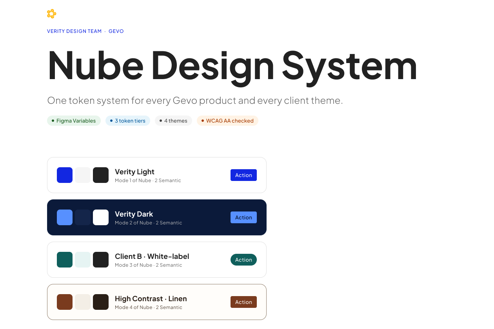
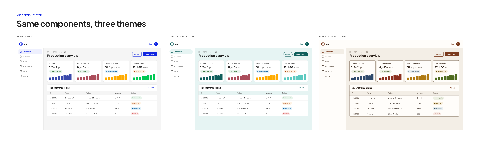
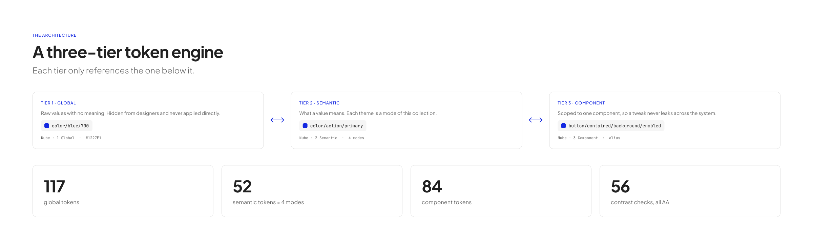
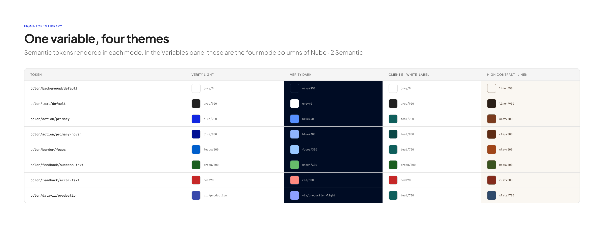
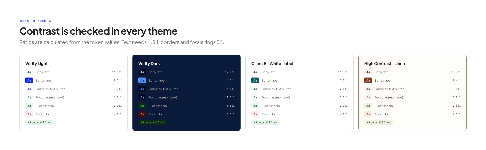
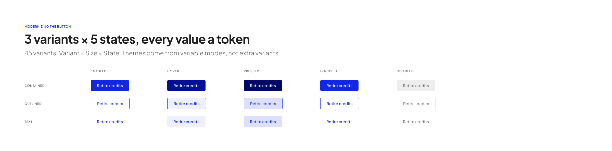
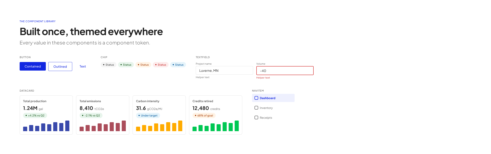
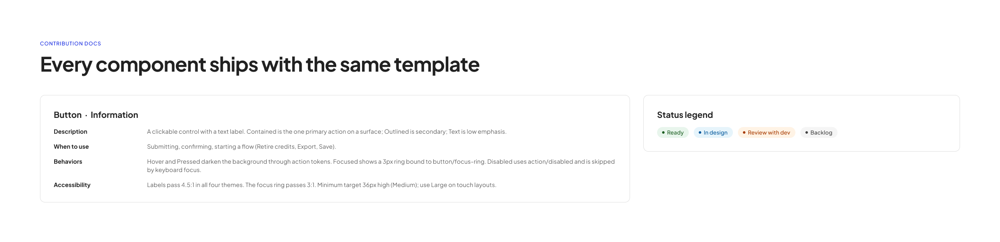

Nube Design System
One token system for every Gevo product and every client theme
Gevo’s dashboards, customer portals and marketing sites had drifted apart, and B2B clients needed their own branded themes that still met strict accessibility contrast. As the design system owner, I built a three-tier token architecture and a design-to-code pipeline, so a single change in Figma updates every product, in every theme.
What I built
A three-tier token system, theme modes for white-label clients and high contrast, and Gevo’s top 20 components rebuilt on tokens.
What I owned
The audit, token architecture and naming, Figma libraries, documentation and contribution model, delivered with Gevo’s front-end engineers.
What changed
About 45% fewer visual inconsistencies, and global brand updates in under a day instead of weeks.
Same components, three themes

(opens full size)Fragmented pixels and raw hex codes
Before Nube, every team styled its own way, and it showed:
Palette sprawl
Teams invented colors and spacing scales as they went, so products that should have felt like one platform didn’t.
No semantic layer
Designers and engineers copied raw hex codes and pixel values, so engineers rebuilt the same styles again and again.
Slow brand changes
Changing the primary brand color meant weeks of coordination across separate code repositories.
No theming
There was no way to give B2B clients their own theme or offer a high-contrast view for accessibility.
A three-tier token engine
Raw values never reach a component. Each tier only references the tier below it, so a change happens in exactly one place.
Global tokens
Raw values with no meaning, hidden from designers: color/blue/700 → #1227E1.
Semantic tokens
What a value means. Each theme remaps this tier: color/action/primary → color/blue/700 in Verity Light, color/teal/700 for Client B.
Component tokens
Scoped to one component, so a tweak never leaks: button/contained/background/enabled → color/action/primary.
The three-tier token architecture

(opens full size)Decisions and tradeoffs
Three tiers, not two
Two tiers would have shipped faster, but themes need a layer to remap, and the component tier lets a team adjust one component without changing the semantic layer for everyone. The cost is more tokens to govern.
One naming grammar
Every token reads category / property / variant / state, so designers and engineers read color/action/primary-hover the same way, and it maps straight to a CSS variable.
Themes are mappings, not variants
A client theme is a new mapping of semantic tokens, not a new set of components. Adding a theme adds zero component variants.
One semantic token, four themes

(opens full size)White-label themes with contrast built in
A theme is a different semantic mapping. Every mapping is contrast-checked before it ships, so any team that uses the tokens gets compliant contrast without having to think about it.
Four themes, one library
Verity Light, Verity Dark, a white-label client theme, and High Contrast · Linen, a warm, soft high-contrast theme for long reading sessions.
Checked in every theme
Text pairs meet WCAG AA (4.5:1) and borders and focus rings meet 3:1 in all four themes. In High Contrast · Linen, every text pair reaches 7:1.
Contrast checked in every theme

(opens full size)Modernizing the component library
We rebuilt Gevo’s 20 highest-traffic components on component tokens, starting with the button: the most-used component, and the messiest. It became the template for the other 19.
Button: 3 variants × 5 states, every value a token

(opens full size)Buttons, chips, fields, data cards and navigation on one token system

(opens full size)From audit to production
Audit
Inventoried every UI and CSS variable to map each rogue style variant.
Blueprint
Defined the naming grammar so design and engineering used the same words for the same things.
Library
Built the token and component libraries in Figma as the visual source of truth.
Pilot
Moved the 20 most-used components onto tokens, tested them in staging, then shipped them to production.
Design-to-code pipeline
A token change in Figma goes through a reviewed pull request and updates the code repositories, so no one copies a hex value by hand.
Documentation and contribution
Every component ships with the same template: description, when to use it, behaviors and accessibility, plus a status from Ready to Backlog.
Every component ships with the same documentation template

(opens full size)What changed
~45% fewer inconsistencies
Visual inconsistencies dropped by about 45% within weeks, tracked in weekly visual interface audits.
Brand updates in under a day
A global brand change went from a multi-week, cross-repository effort to a single token update.
Self-serve theming
Product teams launched client themes and accessible views on their own, without design intervention.
Lessons and next steps
The hard lesson
Governance can’t come later. Token changes needed a lightweight cross-team approval step from day one, or one team’s edit could quietly break another team’s screens.
The horizon
A formal deprecation policy, and linters in the build pipeline that reject hard-coded values before they reach production.
Revisiting Nube in 2026
I rebuilt the library on Figma Variables, with one mode per theme and tokens exported in the W3C design tokens (DTCG) format. The visuals on this page come from that rebuild. Next, I’d connect components to code with Code Connect and expose the tokens to AI coding agents through Figma’s MCP server, so generated UI stays on brand and accessible.